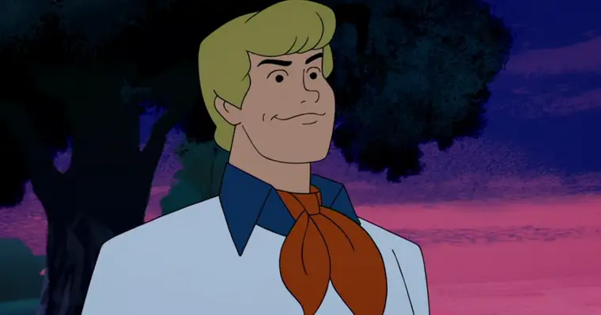
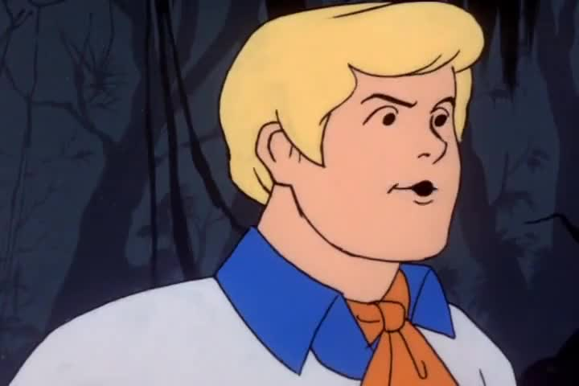
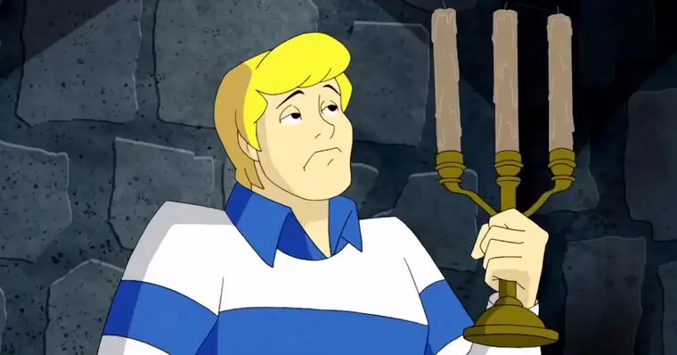
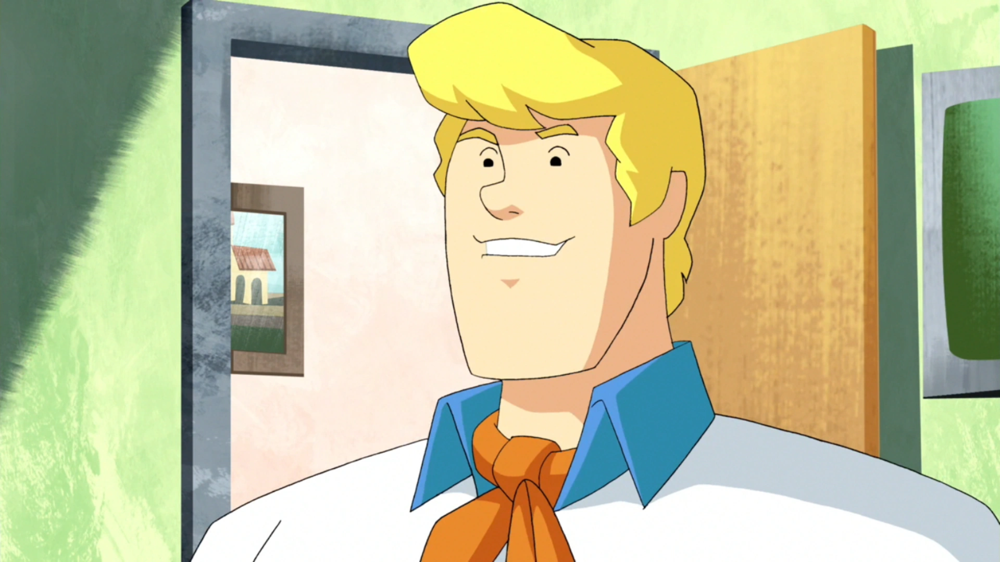
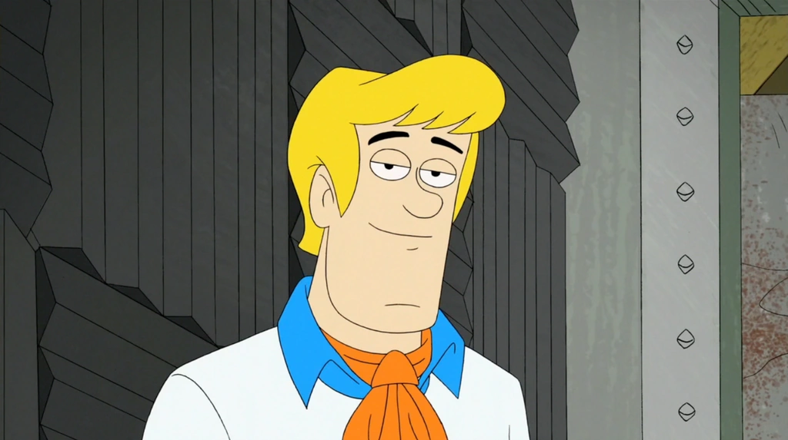

Fred Jones
Frederick Jones, é um jovem de cabelos loiros e olhos castanhos, um dos membros da mistério S/A, é o líder do grupo especialista em criar armadilhas para se defender e capturar os vilões.
Versões

"Scooby-Doo cadê você?"
"Scooby-Doo O Filme"

"O que há de novo
Scooby-Doo?"
"Scooby-Doo o mistério
começa"

"Scooby-Doo Mystery S/A"

"Que legal!! Scooby-Doo"